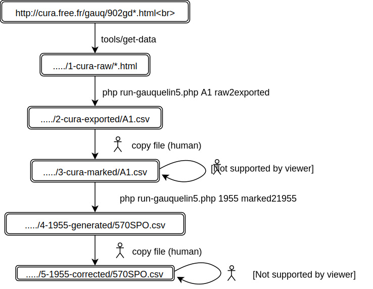

The process is documented using the reconstitution of the group "570 sportifs" published in 1955 as an example.
The following diagram illustrates this process : 
Absolute path to directories containing data (
1-cura-raw/ etc.) must be configured in config.yml.
-
Store cura.free.fr data on a local machine (by program).
This can be done using the scripttools/get-data.
These data are stored somewhere on a local disk in a directory called1-cura-raw/. -
Extract data from html pages to generate csv files (by program).
This is done with the commandphp run-gauquelin5.php A1 raw2exported.
The code used to perform this step is not trivial, because 2 lists must be merged from cura.free.fr data :
- One list contains the data with complete information (birth date, hour, place, country, profession) WITHOUT names.
- One list contains the names and only birth date.
So the merge process leads to cases that are not solvable by program, and human corrections (using Gauquelin original 1955 book) were necessary to write this code.
These data are stored in a directory called2-cura-exported/; for serie A1, the file is2-cura-exported/A1.csv.
Other corrections are done during this step :- Convert country codes to ISO 3166.
- Restore detailed professions (this information is in Gauquelin book but not in cura data).
-
Edit the csv files to associate cura data to Gauquelin 1955 original groups (by human).
File2-cura-exported/A1.csvis copied by a human to3-cura-modified/A1.csv.
A new column ("1955") is added to this file ; this column is filled by a human with a code identifying Gauquelin 1955 groups.
Lines coming from the group "570 sportifs" were marked "570SPO". -
Generate one file per original 1955 group (by program).
Column "1955" of csv files located in3-cura-modified/is used to generate on file per 1955 group.
These files are generated in4-1955-generated/using the commandphp run-gauquelin5 1955 modified21955
This generates for example4-1955-generated/570SPO.csv -
Copy these files to directory
5-1955-modified/(by human). -
Correct the files located in
5-1955-modified/using Gauquelin 1955 book (by human).
Files in this directory are corrected by human.
The following columns are added :G55; FIRST55; LAST55; HOUR55; DATE55; PLACE55; NOTES55; PRO55
They are filled when cura data differ from Gauquelin book.
This step is easier when 2 persons are involved : one reading the book, the other correcting the file. -
Generate 1955 groups (by program) - not yet implemented